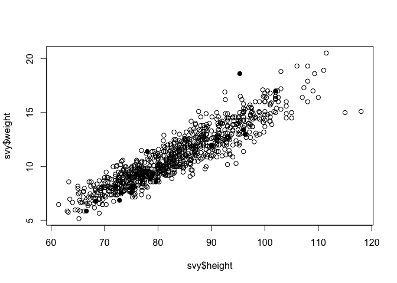
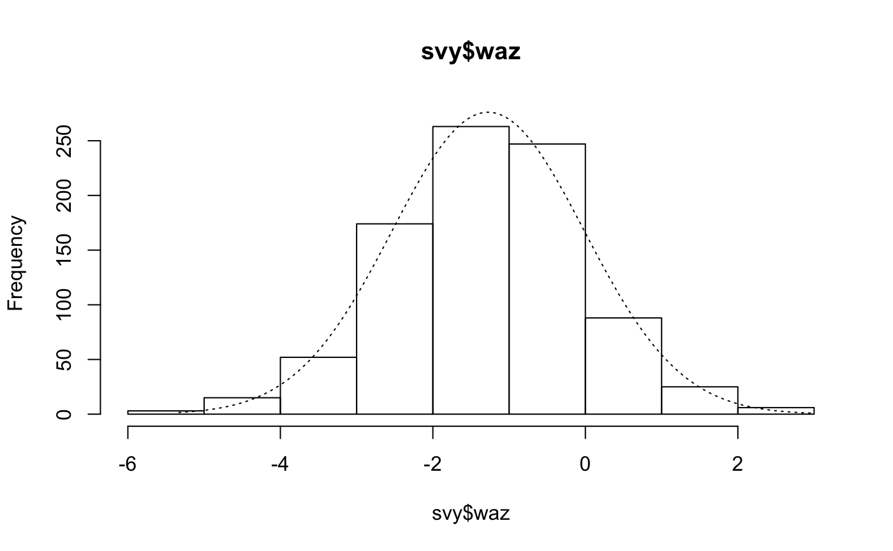
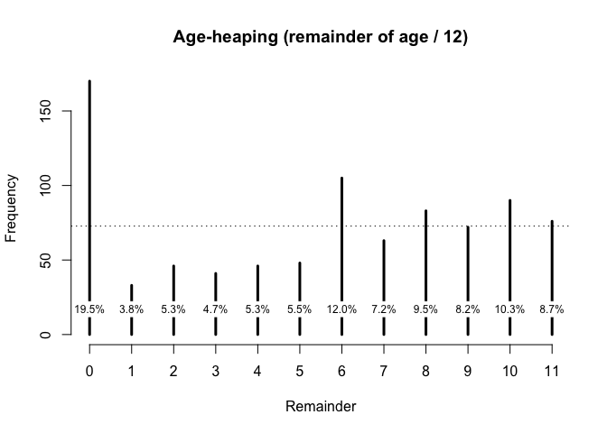

National Information Platforms for Nutrition (NIPN) is an initiative of the European Commission to provide support to countries to strengthen their information systems for nutrition and to improve the analysis of data so as to better inform the strategic decisions they are faced with to prevent malnutrition and its consequences.
As part of this mandate, NiPN has commissioned work on the development of a toolkit to assess the quality of various nutrition-specific and nutrition-related data. This is a companion R package to the toolkit of practical analytical methods that can be applied to variables in datasets to assess their quality.
The focus of the toolkit is on data required to assess anthropometric status such as measurements of weight, height or length, MUAC, sex and age. The focus is on anthropometric status but many of presented methods could be applied to other types of data. NiPN may commission additional toolkits to examine other variables or other types of variables.
Requirements
- R version 3.4 or higher
Extensive use is made of the R language and environment for statistical computing. This is a free and powerful data analysis system. R provides a very extensive language for working with data. This companion package has been written using only a small subset of the R language. Many of the data quality activities described in the toolkit are supported by R functions included in this package that have been written specifically for this purpose. These simplify the assessment of the quality of data related to anthropometry and anthropometric indices.
Installation
You can install the development version of nipnTK from github with:
# install.packages("devtools")
devtools::install_github("validmeasures/nipnTK")Usage
1. Range checks and value checks to identify univariate outliers.
Checking that data are within an acceptable or plausible range is an important basic check to apply to quantitative data. Checking that data are recorded with appropriate legal values or codes is an important basic check to apply to categorical data.
# Load nipnTK package
library(nipnTK)
# Assign dataset rl.ex01 to svy
svy <- rl.ex01
# Summarise MUAC variable
summary(svy$muac)
#> Min. 1st Qu. Median Mean 3rd Qu. Max.
#> 11.1 128.0 139.0 140.3 148.0 999.0# Boxplot of MUAC values
boxplot(svy$muac, horizontal = TRUE, xlab = "MUAC (mm)", frame.plot = FALSE)
# Use outliersUV() function to identify outliers
svy[outliersUV(svy$muac), ]
#>
#> Univariate outliers : Lower fence = 98, Upper fence = 178
#> age sex weight height muac oedema
#> 33 24 1 9.8 74.5 180.0 2
#> 93 12 2 6.7 67.0 96.0 1
#> 126 16 2 9.0 74.6 999.0 2
#> 135 18 2 8.5 74.5 999.0 2
#> 194 24 M 7.0 75.0 95.0 2
#> 227 8 M 6.2 66.0 11.1 2
#> 253 35 2 7.6 75.6 97.0 2
#> 381 24 1 10.8 82.8 12.4 2
#> 501 36 2 15.5 93.4 185.0 2
#> 594 21 2 9.8 76.5 13.2 2
#> 714 59 2 18.9 98.5 180.0 2
#> 752 48 2 15.6 102.2 999.0 2
#> 756 59 1 19.4 101.1 180.0 2
#> 873 59 1 20.6 109.4 179.0 22. Scatterplots and statistical methods to identify bivariate outliers.
# Retrieve sp.ex01 data and assign to svy
svy <- sp.ex01# Look at the relationship between height and weight
plot(svy$height, svy$weight)
# Assess the strength of relationship using the Pearson correlation coefficient:
cor(svy$height, svy$weight, method = "pearson", use = "complete.obs")
#> [1] 0.9204116This is very close to one, which indicates a perfect positive association. There are, however a few points that lie outside of the bulk of the plotted points. These outliers may be due to errors in the data. The presence of oedema can be associated with increased weight. This is a particular issue with severe oedema. An outlier with a high value of weight for a given height could be due to oedema. We can check this:
plot(svy$height, svy$weight, pch = ifelse(svy$oedema == 1, 19, 1))
A more formal method of identifying outliers is to use a measure of the statistical distance. A common measure of statistical distance that is applied to scatterplot data is the Mahalanobis distance. This treats the bivariate probability distribution as an ellipsoid. The Mahalanobis distance is the distance of a point from the centre of mass of the distribution divided by width of the ellipsoid in the direction of the point:
The NiPN data quality toolkit provides an R language function outliersMD() that uses the Mahalanobis distance to identify outliers in the same dataset:
svy[outliersMD(svy$height,svy$weight), ]
#> age sex weight height muac oedema
#> 1 54 1 20.5 111.5 180 2
#> 6 48 2 18.6 95.3 171 1
#> 16 30 1 16.9 92.5 188 2
#> 62 55 1 15.1 118.0 156 2
#> 66 56 1 15.0 115.0 148 2We can use the outliersMD() to identify and display outliers on a scatterplot:
plot(svy$height, svy$weight, pch = ifelse(outliersMD(svy$height, svy$weight), 19, 1))
3. Use of flags to identify outliers in anthropometric indices.
library(nipnTK)
svy <- flag.ex01
# Set flag variable to 0
svy$flag <- 0
# Apply WHO flagging criteria to survey data
svy$flag <- ifelse(!is.na(svy$haz) & (svy$haz < -6 | svy$haz > 6), svy$flag + 1, svy$flag)
svy$flag <- ifelse(!is.na(svy$whz) & (svy$whz < -5 | svy$whz > 5), svy$flag + 2, svy$flag)
svy$flag <- ifelse(!is.na(svy$waz) & (svy$waz < -6 | svy$waz > 5), svy$flag + 4, svy$flag)Note that each time we apply a flagging criteria we increase the value of the flagging variable by the next power of two when a problem is detected:
We started with zero
Then we added 20 (i.e. 1) if HAZ was out of range. Then we added 21 (i.e. 2) if WHZ was out of range. Then we added 22 (i.e. 4) if WAZ was out of range.
If we had another index then we would use 23 (i.e. 8) to flag a problem in that index.
The advantage of using this coding scheme is that it compactly codes all possible combinations of problems in a single variable
4. Examining the distribution and the statistics of the distribution of measurements and anthropometric indices.
We will examine the distribution of anthropometric variables (e.g. weight, height, and MUAC), anthropometric indices (e.g. WHZ, HAZ, and WHZ), and anthropometric indicators (e.g. wasted, stunted, and underweight).
svy <- dist.ex01
summary(svy$weight)
#> Min. 1st Qu. Median Mean 3rd Qu. Max.
#> 4.90 9.00 11.00 11.13 13.10 20.70
sd(svy$weight)
#> [1] 2.802065The NipN data quality toolkit provides an R language function called histNormal() that can help with “by-eye” assessments by superimposing a normal curve on a histogram of the variable of interest:
histNormal(svy$muac) 
histNormal(svy$haz) 
histNormal(svy$waz) 
histNormal(svy$whz)
5. Assessing the extent of digit preference in recorded measurements.
Measurements in nutritional anthropometry surveys are usually taken and recorded to one decimal place.
Digit preference is the observation that the final number in a measurement occurs with a greater frequency that is expected by chance. This can occur because of rounding, the practice of increasing or decreasing the value in a measurement to the nearest whole or half unit, or because data are made up.
The NiPN data quality toolkit provides an R language function called digitPreference() that uses a summary measure that takes into account the effect of sample size. A widely used method is the digit preference score (DPS) developed by WHO for the MONICA project.
First we will work with some artificial data:
set.seed(0)
finalDigits <- sample(x = 0:9, size = 1000, replace = TRUE)
table(finalDigits)
#> finalDigits
#> 0 1 2 3 4 5 6 7 8 9
#> 96 104 91 113 115 85 90 107 89 110We can now calculate the DPS using digitPreference():
digitPreference(finalDigits, digits = 0)
#>
#> Digit Preference Score
#>
#> data: finalDigits
#> Digit Preference Score (DPS) = 3.5 (Excellent)6. Assessing the extent of age heaping in recorded ages.
Age heaping is the tendency to report children’s ages to the nearest year or adults’ ages to the nearest multiple of five or ten years. Age heaping is very common. This is a major reason why data from nutritional anthropometry surveys is often analysed and reported using broad age groups.
The NiPN data quality toolkit provides an R language function called ageHeaping() that performs age-heaping analysis.
Using data from a SMART survey in Kabul, Afghanistan, we can apply this function as follows:
library(nipnTK)
svy <- dp.ex02
# Apply ageHeaping() function
ah12 <- ageHeaping(svy$age)The saved results may also be plotted:
plot(ah12, main = "Age-heaping (remainder of age / 12)")
7. Examining the sex ratio.
The male to female sex ratio test checks whether the ratio of the number of males to the number of females in a survey sample is similar to an expected ratio. The expected male to female sex ratio can be calculated from census or similar data. If there is no expected value then it is usually assumed that there should be equal numbers of males and females in the survey sample. This is usually true for children and young adults but may not be true for older adults.
The NiPN data quality toolkit provides an R language function called sexRatioTest() that performs a sex ratio test.
Using data from a SMART survey in Kabul, Afghanistan, we can apply this function as follows:
library(nipnTK)
svy <- dp.ex02
# Apply sexRatioTest() function
sexRatioTest(svy$sex, codes = c(1, 2), pop = c(2.658, 2.508))
#>
#> Sex Ratio Test
#>
#> Expected proportion male = 0.5145
#> Observed proportion male = 0.5017
#> X-squared = 0.5225, p = 0.46988. Examining age distributions and age by sex distributions.
The NiPN data quality toolkit provides an R function called ageChildren() that performs the model- based Chi-Squared test to check whether there is a difference between the number of males and females at different age groups. This function can be applied as follows:
ageChildren(svy$age, u5mr = 1)
#>
#> Age Test (Children)
#>
#> X-squared = 21.4366, df = 4, p = 0.0003